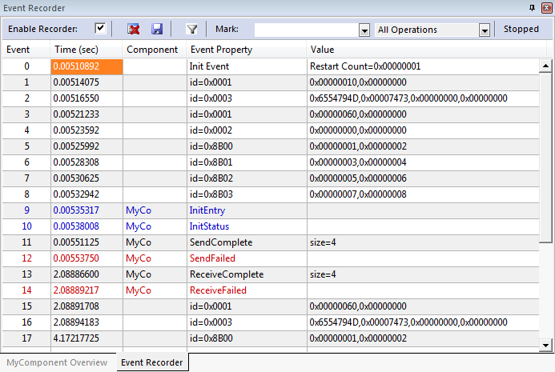

|
CMSIS-View
Debugger Views for Status and Event Information
|


|
|
CMSIS-View
Debugger Views for Status and Event Information
|
|
MyComponent implements a data transfer using the functions MyComp_initialize, MyComp_send, and MyComp_receive. During operation, the component calls event functions that provide event data for recording by the Event Recorder.
This example shows how to:
It is possible to add Event Annotations pragmatical as explained in the section Using Event Recorder. However, for more complex software components, it makes sense to use a structured approach as described in the following.
Event annotation should deliver meaningful information about the dynamic execution of a software component and can be grouped into the following categories using level information in the EventID.
Instead of using the general purpose Event Data Recording functions, specify component specific functions that can be tagged with an EventID. These component specific functions are calling then the Event Data Recording functions.
The event recorder functions for the MyComponent software component are using severity level information in their EventIDs (refer to the file EvrMyComponent.h in the example project):
The EventID also contains information about the component number (to identify the event) and the specific message number that is used to display additional information in the Event Recorder window.
The SCVD file for MyComponent uses this message number information to display the correct messages in Event Recorder.

Software components are frequently a black-box to the application programmer and event annotations need additional descriptions that interlinks with API related documentation.
Doxygen is frequently used to generate API documentation. Using this approach, event annotations can be documented in a similar way. Once the software component is framed as a CMSIS-Pack, the documentation for event annotations opens using hyperlinks in the Event Recorder.
A full documentation of the software component is available in the software pack that is built in the next step. You will find the Doxygen source code in ./SCVD_Examples/MyComponent/Doxygen. Run the script gen_doc.bat to create the documentation.
Open-CMSIS-Pack describes a mechanism to deliver software components, device parameters, and evaluation board support. The XML-based package description file (PDSC) describes the content of a software pack (file collection) that may include:
For the software component "MyComponent", as pack is available in the directory ./SCVD_Examples/MyComponent_Pack. Double-click MyVendor.MyComponent.1.0.0.pack to install it on your system. It contains one software component called :MyVendor:MyComponent with related documentation.
The PDSC file is very simple. It declares a single software component that comes with source files, SCVD and HTML documentation:
An example project called "MyComponent Pack Example" is also part of the pack. It is basically the same example as SCVD in MyComponent, only that it is using the "MyComponent" software component.
If you build and run the example, you will see that the events that are recorded now contain hyperlinks that bring up the related documentation.

With this, you can create re-usable software components that can be equipped with Event Recorder information and related documentation. This is useful if you intend to share the software component within your company or with third parties.